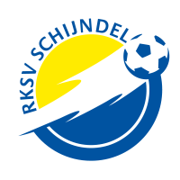

 Ik zelf voetbal al 3 jaar bij de club RKSV Schijndel. Ik voetbal bij deze club omdat mijn broertje daar ook al zat voordat ik begon. Al vrij snel na dat me broertje op voetbal ging wilde ik eigenlijk ook al voetballen maar dat mocht niet van mama omdat ze liever had dat ik iets anders deed. Eindelijk na jaren wachten voetbalde ik bij RKSV Schijndel.
In het begin speelde ik in een jongensteam met een stuk of 8 meiden, het seizoen er na waren er genoeg meiden om een 11tal te beginnen, dit vond ik natuurlijk geweldig! Sinds dien zijn er mensen gekomen en gegaan maar dat mag de pret niet drukken, ik zit momenteel in een heel gezellig team met zowel nieuwe als oude speelsters, ze noemen ons de MO17-1 van RSKV Schijndel.